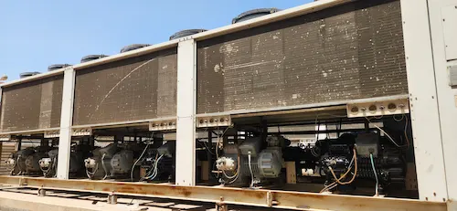
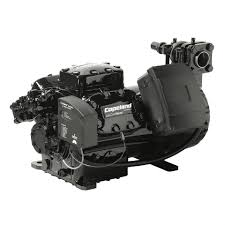
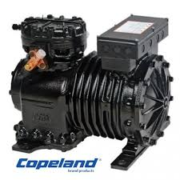
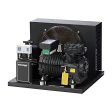
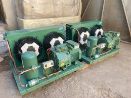
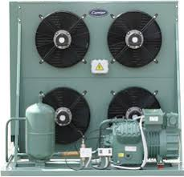
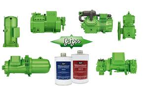

صيانة الضواغط
دليل صيانة كمبروسر Bitzer: 5 خطوات لإطالة عمر الضواغط
تعرف على الطريقة الصحيحة لتغيير الزيت وفحص البلوف في ضواغط بيتزر الألمانية لضمان أعلى كفاءة...
اقرأ التفاصيل ←أكبر موسوعة عربية متخصصة في صيانة وتشغيل غرف التبريد الصناعية
تعرف على الطريقة الصحيحة لتغيير الزيت وفحص البلوف في ضواغط بيتزر الألمانية لضمان أعلى كفاءة...
اقرأ التفاصيل ←
توزيع الهواء ومسافة القذف (Air Throw) هي السر خلف جودة المنتجات المخزنة، إليك المواصفات الفنية...
اقرأ التفاصيل ←
شرح تقني لكيفية الحفاظ على الخصائص البيولوجية للحوم والخضروات باستخدام أنظمة الصعق الحراري...
اقرأ التفاصيل ←
كيف تحسب حمل التبريد بدقة؟ دليل متكامل يشرح مصادر الأحمال الحرارية ومعادلات التصميم للمهندسين...
اقرأ التفاصيل ←
الانزلاقي أم اللولبي أم المفصلي؟ دليل شامل لاختيار باب غرفة التبريد بناءً على درجة الحرارة وحجم التشغيل...
اقرأ التفاصيل ←
جداول صيانة وحدات التكثيف في مناخ الخليج الحار، وكيفية معالجة ارتفاع ضغط التكثيف وتنظيف الكوندنسر...
اقرأ التفاصيل ←
مقارنة هندسية شاملة بين كمبروسر كوبلاند سكرول والترددي من حيث الكفاءة والتكلفة والموثوقية وظروف التشغيل...
اقرأ التفاصيل ←
دليل هندسي لضبط كنترولر دانفوس EKC 202 وEKC 361: إعدادات درجة الحرارة، التذويب، فترة الإنذار، ومنطق التحكم...
اقرأ التفاصيل ←
تحسين العزل الحراري، ضبط الكنترولر، جدولة التذويب، واختيار المبخر الصحيح — تقنيات ترشيد موثقة من تجارب ميدانية...
اقرأ التفاصيل ←
أعراض تسرب R404A وR410A وR22، طرق الكشف الإلكترونية والعقلانية، وخطوات الإصلاح مع معايير الضغط والشحن...
اقرأ التفاصيل ←
السماكات المطلوبة لكل درجة حرارة، معامل الانتقال الحراري U-value، وأنواع الوجهات المعدنية ومعايير الاختيار...
اقرأ التفاصيل ←
دليل هندسي متكامل لأنظمة R717: المزايا التقنية، حسابات التصميم، متطلبات السلامة، ومقارنة شاملة مع الفريونات الحديثة...
اقرأ التفاصيل ←
دليل شامل لصيانة كمبروسرات بيتزر في مناخ الخليج الحار — جداول الصيانة، مؤشرات الضغط، ومواصفات زيت التشحيم الصحيحة...
اقرأ التفاصيل ←
دليل هندسي متكامل لتصميم وتركيب غرف التبريد في الدمام، الخبر، الجبيل، الأحساء — متطلبات المناخ الخليجي والأحمال الحرارية...
اقرأ التفاصيل ←
مرجع عملي لقراءة Superheat وSubcooling بصورة صحيحة واستخدامهما في تشخيص نقص الشحنة، انسداد الفلتر، سوء ضبط صمام التمدد، وضعف التكثيف...
اقرأ التفاصيل ←حاسبة هندسية دقيقة تحسب القدرة المطلوبة لغرفة التبريد أو التجميد بناءً على الأبعاد ونوع المنتج ودرجة الحرارة — مجاناً تماماً.
ابدأ الحساب